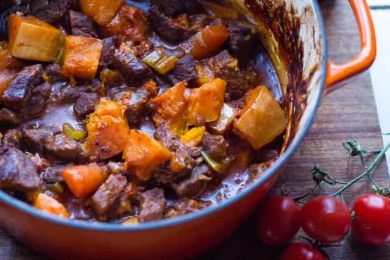

< < < Back
6 Tips To Start Your Winter Bulk Off Right – Return Of Kings
It’s no secret that it’s almost impossible to gain muscle while also staying lean at the same time. The fact of the matter is that if you want to gain a large amount of muscle, you must eat at a caloric surplus. In other words, you won’t be gaining large amounts of muscle without putting on a little bit of body fat.
This is why a lot of guys go through the bulking and cutting cycles. What they do is they eat large amounts of food while putting on some serious mass, which is the bulking component, for 4-6 months, sometimes longer. Then, around February or March, they go through a cutting cycle, where they eat less so that they slim down.
Each one has pros and cons. Bulking cycles get you really big, but you’re not as shredded. Cutting cycles get you looking lean, with a six pack, but you lose some muscle in return. Regardless, if you go through a bulking cycle and then decide to cut, you’ll still retain a lot of muscle mass.
This is why most guys opt to bulk during the winter—since you aren’t at the beach, being super lean won’t matter much anyway. Then, come February, they start a cutting cycle, and get down to around 8% body fat to look good during the summer.
So, with this in mind, here’s some tips to do your winter bulk the right way.
1. Break Your PR’s

Now is the time to go all out, gentlemen. It’s very difficult to break personal records on a cutting cycle, for the simple reason that you’re in a caloric deficit. When you’re in a caloric deficit, your body relies on breaking down fat for energy, which is fairly inefficient.
When you’re bulking, however, you don’t have to worry about this—you can stuff your face prior to lifting (assuming it’s with healthy, high quality food), and go all out. That’s why this is the time to break your deadlift, bench press, squat, and overhead press records.
To do this, I recommend using gym gear—and no, not that type of gear. I’m talking about the straps, belts, and wraps. Using gym gear is one of the most effective ways to break your PR’s. Hell, my deadlift went up a whopping 25% just from using a belt and some straps.
2. Don’t Workout Abs

I know that a lot of guys might disagree with me here, but it’s the truth. There’s no point in working out your abs unless you’re going to be sub-10% bodyfat.
There’s an old bodybuilding saying that goes something like this: “Abs are made in the kitchen, not in the gym,” and I wholeheartedly agree. If you’re not on a cutting diet, your abs aren’t going to show. Period. So why bother working them out?
“But won’t my abs get weak, Jon?” I can hear someone ask. No, they won’t. As long as you’re doing powerlifting exercises such as deadlifts and squats, you won’t need to worry about your abs atrophying.
See, when you do very heavy compound lifts, your abs act as an auxiliary muscle. In other words, they have to clench up tightly to support the enormous weight that you’re lifting. This in and of itself is enough to get a six pack if you have very low bodyfat. If you do this all winter, and then just throw in some ab exercises in April or May, you’ll be totally good to go.
3. Use Mass-Gaining Shakes

I want to be clear: you don’t need supplements. I’ve said it once, and I’ll say it again. You do not need supplements. The bulk of your diet should be comprised of complex carbohydrates such as oatmeal, sweet potatoes and rice, healthy fats such as olive oil and nuts, and quality proteins such as chicken breast, salmon, and grass-fed steak.
That being said, if you want to supplement your diet with, you guessed it, supplements, it will allow you to get that extra edge.
Using high quality whey protein is a phenomenal way to add in an extra 50 grams of protein a day, in addition to giving your muscles the well-deserved nutrients that they need.
I personally always use a whey protein shake with two bananas after my workouts. Bananas are high in potassium, which alleviates any muscle cramping I may have, and they’re fast digesting glucose. Whey protein is very quickly assimilated into the muscles, so it gets your muscles out of a catabolic state (a state of breakdown) and puts them into an anabolic state (a state of recovery).
4. Start Early, End Early
A lot of guys make the mistake of waiting until November or December to start their winter bulk; don’t do this. By the time that you start to actually put some weight on, it’ll be time to cut, and you’ll spend all of December and January freezing your ass off because you’re 10% bodyfat.
Instead, I recommend that you start bulking up for winter NOW. This is what I’ll be doing (once I finish physical therapy) and it’s what I recommend you do, too. Then, around February or March, start shredding fat. Cut back on the calories, drink lots of water, use pre-workouts that give you extra energy and boost testosterone, hit the sauna, and consider practicing intermittent fasting.
If you do this, not only will you break tons of personal records and put on slabs of muscle all throughout the holidays, but you’ll get lean and shredded just in time for beach season. And if you’ve ever done “beach game,” when you have a six pack, you’ll know it’s like shooting fish in a barrel.
5. Get Plenty Of Sleep

For millions of years, winter was the season of sleeping. Our ancestors didn’t have artificial lights to keep them awake, so they naturally went to bed earlier and slept longer with the increase in darkness.
Despite the fact that we’ve used technology to artificially extend daytime, our bodies still yearn to follow the seasons. Use the winter as a time of reflection, which is what I plan on doing. The winter season should be a time of personal development.
It should be a time for you to sleep an extra hour or two each night, a time of intense introspection, reading, and meditation. You should use the Winter months to not only grow your body, but to grow your mind. Then, come spring, new life shall begin—start sleeping less (although still get 8-9 hours a night), focus more on growing your business and game, and eat less hearty foods (save those for the winter).
6. Eat Hearty Winter Foods

As I said, winter is the best time to eat hearty foods. This season-long resting period will allow you to regain your strength so that you can hit it hard come spring and summer.
Spend lots of time learning to become a better cook, because Lord knows that most women nowadays certainly won’t be of assistance in this area. Learn how to cook hearty meals, like thick, warm stews, with barley, oats, lamb chops, and vegetables.
Eat nice, warm vegetables like cooked squash, beets, onions, carrots, and cabbage. Eat fatty meats (my favorite) such as steaks, pork, wild caught salmon, and sardines in olive oil. Not only are the fats phenomenal for your testosterone levels, muscle-cell reparation, and brain-health, but they’re also a great way to get in some extra calories for your winter bulk.
If you can’t afford all of this, whether it’s because you’re a broke college student, or you spend all of your money on table service and hookers, don’t worry, I’ve got you covered. Just follow my guide on How to Bulk Up When You’re Broke as a Joke.
Read More: 26 Tips For Getting Laid In Europe During The Winter